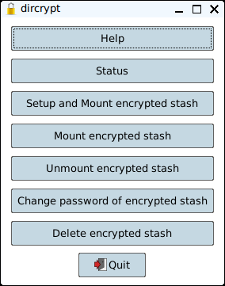

Dircrypt is a simple GUI utility to manage a directory encryption facility.
These facilities make use of 2 directories, an encrypted directory that contains the actual files in an encrypted form,
and a plaintext directory which is used as a mount point that appears to contain the files in an unencrypted form, when the stash is mounted.
Directly accessing the encrypted files via the encrypted directory is not recommended.
A stash is setup when an encrypted directory is defined, a plaintext directory is defined and a password is assigned.
This setup process creates both directories, if they do not already exist, and then mounts the new stash.
The plaintext directory is deleted on unmount, and created on mount.
This is to avoid any access to the plaintext directory while the stash is unmounted.
Dircrypt currrently supports the "encfs" and "gocryptfs" encryption facilities.
"encfs" is available in the "Puppy Package Manager" of many Puppies.
"gocryptfs" is available in the "Puppy Package Manager" of only a few recent Puppies.
A 64bit "gocryptfs" is also available from the gocryptfs download site.
Dircrypt supports only a single encryption facility at a time.
It also supports the encryption of only a single directory at a time.
At first run, you will be asked to choose an encryption facility, if there is more than 1 supported and installed.
You may also be asked to choose an encrytion level, if the chosen encryption facility supports them.
Dircrypt can setup, mount, unmount, change the password for, and delete, an encrypted stash using specified directories and using the specified encryption facility.
Help button:
Displays this page in the default browser.
Status button:
Shows a text dialog containg information about what is defined, setup, or mounted. Useful for discerning what is the next appropriate action.
Setup and Mount encrypted stash button:
Opens 2 dialogs to allow specification of the following:
the directory that will contain the actual encrypted files,
and the directory that will be the mount point that appears to contain the plaintext files. This plaintext directory is usually required to be different from the encrypted directory.
If the specified encrypted directory has already been setup with a password, a dialog to enter that password and mount the existing stash, will be displayed.
Otherwise, a dialog to assign a password to the new stash, and then setup and mount it, will be displayed.
Mount encrypted stash button:
Displays a dialog to enter the password for the defined stash. If the provided password matches the original specified password, the stash is mounted, providing access to the files via the plaintext directory.
Unmount encrypted stash button:
Unmounts a mounted stash, and then deletes the now empty plaintext directory so that files will not be stored there while the stash is unmounted, since these would not be encrypted.
Change password of encrypted stash button:
Opens a dialog to change the password for the defined stash.
The stash must already be unmounted.
Delete encrypted stash button:
This deletes the directories of the currently defined stash, and clears the definitions of the directories.
The stash must already be unmounted.
A typical creation session would start with the Setup button.
After files are added to the plaintext directory, the Unmount button would be selected to unmount the stash.
A typical usage session would start with the Mount button, followed by a time of accessing the files via the plaintext directory, and then unmounting the stash using the Unmount button.
The Status button can be used at any time to find out where you're at.
Dircrypt stores its setup in "$HOME/.config/dircrypt.conf"